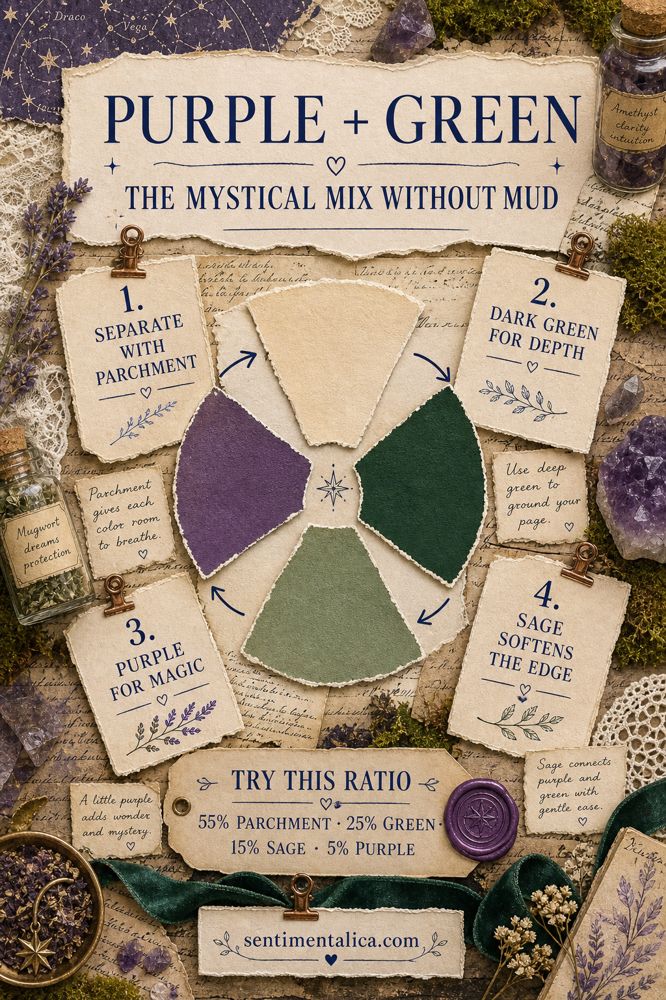
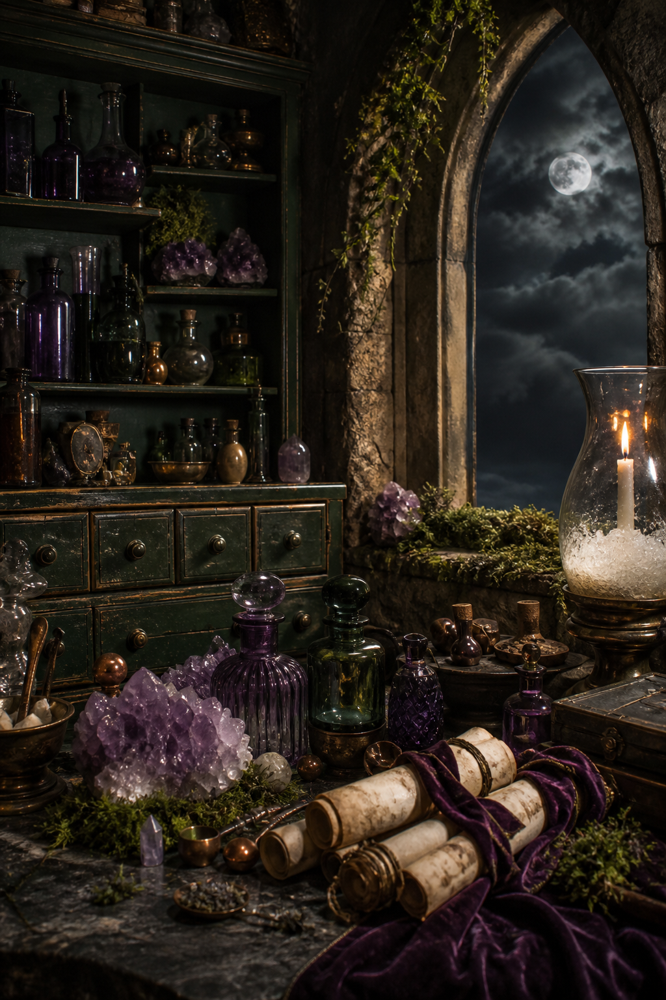
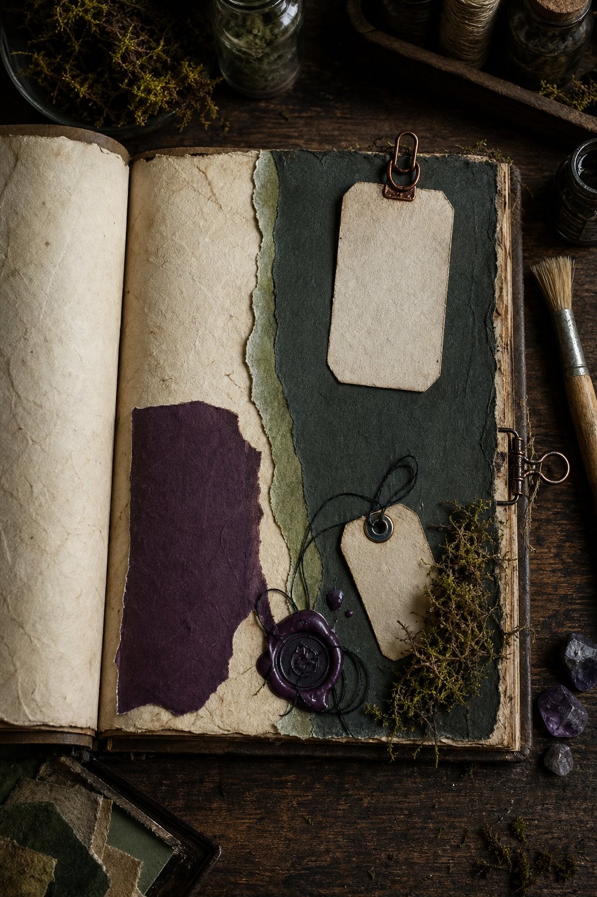
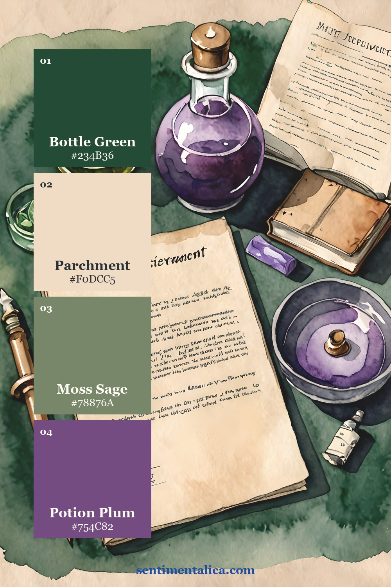
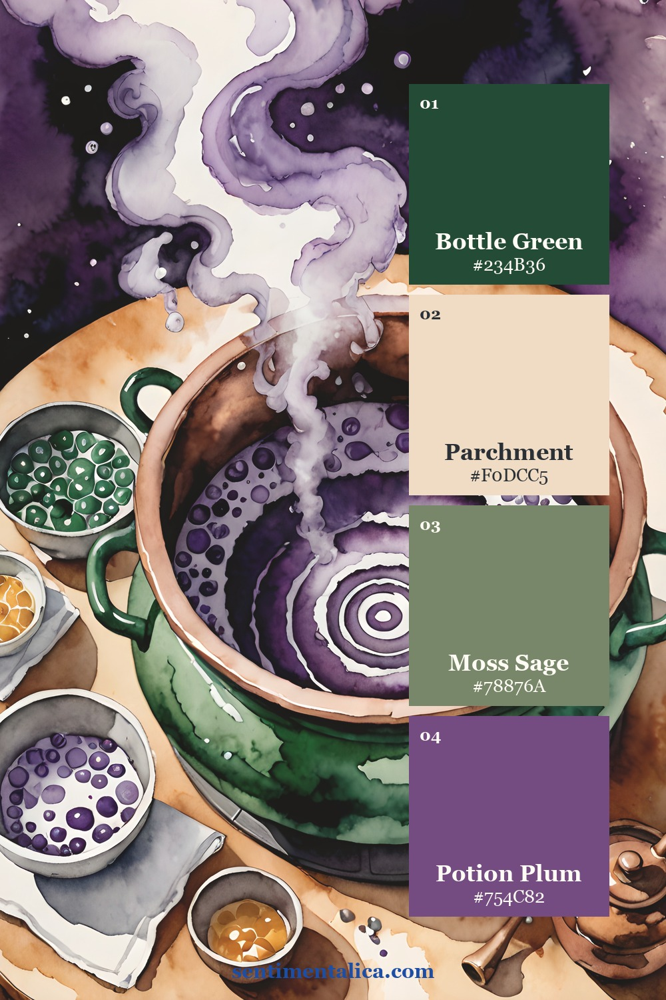
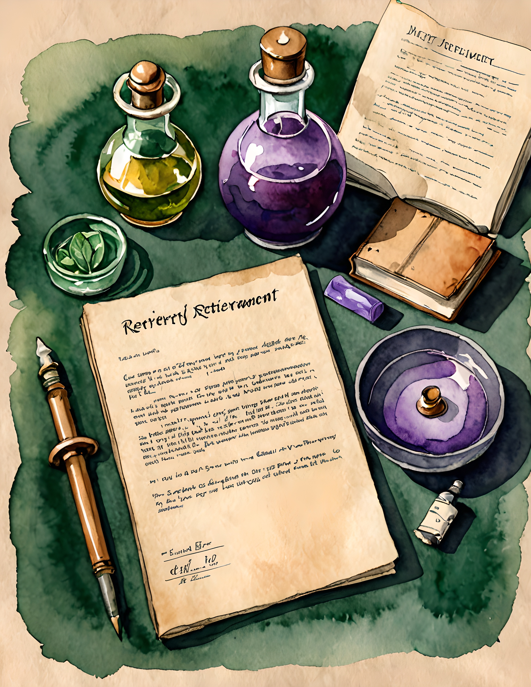
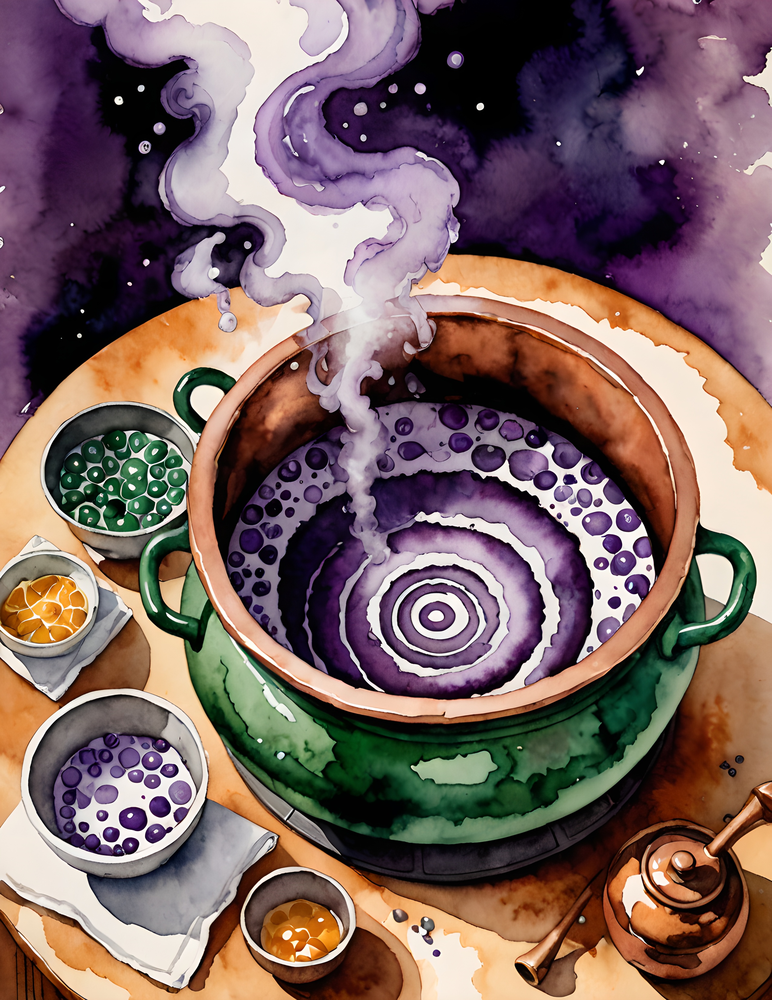
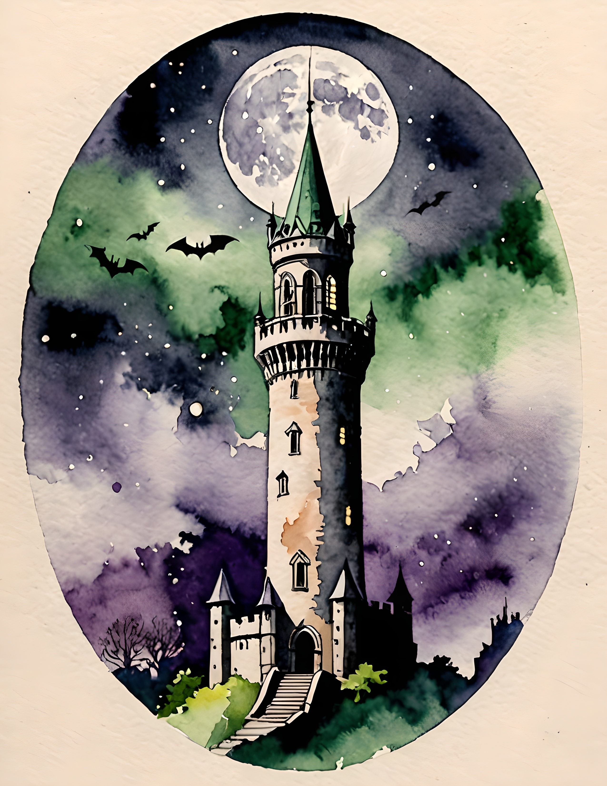

Purple and green are perfect for mystical journal pages, but they can turn muddy when every shade is dark and every layer touches. The solution is to separate the jewel colors with parchment, choose one green for depth, and keep purple as the note of magic.

Separate jewel colors with parchment
Place parchment between large purple and green areas. It may be a torn page, label, envelope edge, or writing space. The neutral keeps the hues clear and creates enough light for darker imagery to remain readable.
Do not use equal amounts of every color. Begin near 55 percent parchment, 25 percent bottle green, 15 percent sage, and 5 percent plum. Purple feels more mysterious when it is discovered in a few concentrated places.
Choose one deep green
Bottle green should anchor the page. Use it for one large paper layer, pocket, or edge. Let moss sage handle the smaller botanical details. Two greens with different values create depth without introducing another color family.

Magic Bottle uses this contrast throughout its purple and green watercolor imagery. The collection includes apothecary-inspired objects, potion scenes, parchment, crystals, and storybook architecture, all useful when you want a mysterious page with a clear palette.
Keep purple small and intentional
Choose one plum paper scrap, wax seal, ribbon, crystal detail, or image focal point. Repeat it once in a smaller size on the opposite side of the composition. If you spread purple evenly across the page, it becomes background color and loses its sense of discovery.

When the page feels too dark, add light before adding color. Widen the parchment margin, tuck in a cream label, or leave one tag blank. Pale space is part of the palette, not unfinished work.
Prevent muddy layers before they are glued
Set the purple and green papers beside each other, then squint at the page. If their edges disappear, both colors have nearly the same value. Lighten one layer with parchment, choose a softer sage, or trim the plum into a smaller shape. Clear value differences matter more than finding the perfect named shade.
Transparent materials need the same test. Purple tissue placed directly over green may become brown, even when both pieces look beautiful alone. Slip cream paper beneath the tissue or overlap only a narrow corner. With digital printables, print a small draft first because home printers can deepen violet and bottle green more than the screen suggests.
Metal accents also affect the mix. A little aged copper warms both colors and suits an apothecary mood, but bright silver can make the palette feel icy. Choose one metal, repeat it twice, and keep each appearance smaller than the plum accent.
Two real-page palette studies
The worktable page mixes objects of several sizes, which makes it a useful guide for distributing color. The cauldron page is more concentrated, so the neutral paper around the vessel becomes especially important.


If you want a botanical layer without adding another hue, choose a pale or muted green flower from the 100 free floral pictures. Let it merge with the sage family instead of becoming a new accent.
See the palette in real pages



Purple and green do not become muddy because they are difficult colors. They become muddy when they share the same darkness and occupy the same space. Give them different values, separate them with parchment, and let purple remain rare. Find more palette studies in the Sentimentalica journal.